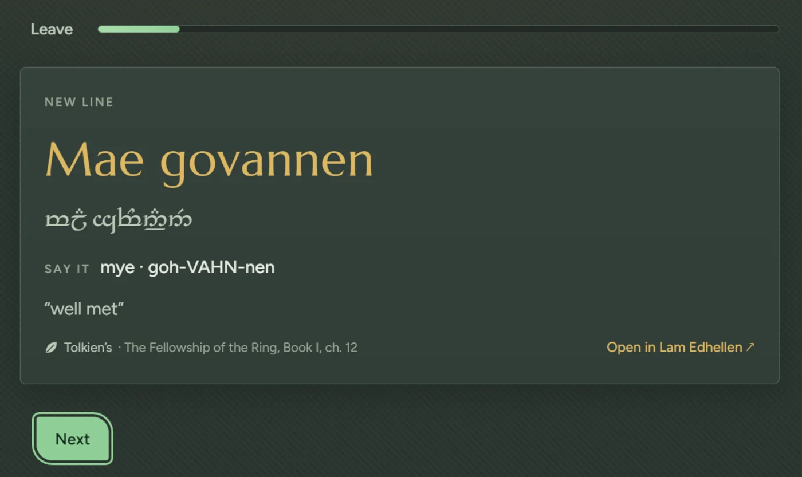

{{page:home|Pedo Edhellen|Pedo Edhellen, “Speak Elvish!”: a course in Tolkien’s Sindarin and Quenya with every word traced to its source, and its companion translator, Lam Edhellen.}}

<div class="wrap">
  <section class="leaf" aria-labelledby="title">
    <div class="text">
      <div class="figure-word">
        <p class="specimen" lang="sjn"><span class="w">Pedo<sup class="fn"><a href="#n1" id="r1" aria-label="Note 1">1</a></sup></span> <span class="w">Edhellen<sup class="fn"><a href="#n2" id="r2" aria-label="Note 2">2</a></sup></span></p>
        <p class="tw" aria-label="Pedo Edhellen in Tengwar">{{tw:Pedo Edhellen|S}}<sup class="fn"><a href="#n3" id="r3" aria-label="Note 3">3</a></sup></p>
        <p class="say">Say it: <b>{{say:Pedo Edhellen|S}}</b></p>
      </div>
      <h1 id="title">Speak Elvish. A course in the languages Tolkien wrote, with every word traced to his page.</h1>
      <p class="lede">Short lessons in Sindarin and Quenya that come back just as you start to forget. Each word says whether Tolkien wrote it, built it, drafted it early, or never wrote it at all.</p>
      <div class="actions">
        <a class="press" href="get.html">Start learning, free {{icon:arrow}}</a>
        <a class="quiet" href="https://hoodedhacker32.github.io/elvish-translator/">Try the translator {{icon:out}}</a>
      </div>
      <p class="hint">In your browser or on Windows, no account needed.</p>
    </div>
    <aside class="margin" aria-label="Notes">
      <ol class="notes">
        <li id="n1"><span class="elv" lang="sjn">pedo</span>“speak!” Tolkien’s command over the door of Moria, <i>pedo mellon a minno</i>, “speak, friend, and enter”. <cite>The Fellowship of the Ring, Book II, ch. 4.</cite></li>
        <li id="n2"><span class="elv" lang="sjn">edhellen</span>“Elvish”, as in Gandalf’s <i>annon edhellen</i>, “Elvish gate”, in the same chapter.</li>
        <li id="n3">The same name in the Tengwar, the letters Tolkien designed for his languages. Every word in the course is shown this way.</li>
      </ol>
    </aside>
  </section>

  <section class="leaf" aria-labelledby="real">
    <div class="text">
      <h2 id="real">Is Elvish a real language?</h2>
      <p>Real enough to learn. Tolkien began inventing Elvish languages as a young man and was still revising them when he died in 1973.<sup class="fn"><a href="#n4" id="r4" aria-label="Note 4">4</a></sup> Sindarin, the Elvish spoken in <i>The Lord of the Rings</i>, and Quenya, the ancient tongue of Galadriel’s lament, both have sounds, grammar and thousands of words.</p>
      <p>He never finished either. There is no complete dictionary, and plenty of everyday words were never written. People who write Elvish today fill those gaps with new words of their own.<sup class="fn"><a href="#n5" id="r5" aria-label="Note 5">5</a></sup> Pedo Edhellen teaches what Tolkien left and tells you plainly whenever a word is not his.</p>
      <p><a class="more" href="names.html">What the names mean {{icon:arrow}}</a></p>
    </div>
    <aside class="margin" aria-label="Notes">
      <ol class="notes" style="counter-reset: note 3">
        <li id="n4">Eldamo, the lexicon this course draws on, sorts his work into stages: Early Qenya from the 1910s, Middle Quenya and Noldorin from the 1930s, and the Quenya and Sindarin of 1950 to 1973.</li>
        <li id="n5">Called Neo-Elvish. Eldamo marks every such word, and so does every screen of this course.</li>
      </ol>
    </aside>
  </section>

  <section class="leaf wide" aria-labelledby="lesson">
    <div class="text">
      <div class="plate-row">
        <figure class="plate"><picture><source media="(max-width: 560px)" srcset="shots/app-lesson-narrow.webp" width="900" height="380"></picture></figure>
        <p class="caption"><b>A new line in a lesson.</b> Glorfindel’s greeting to Aragorn, with its Tengwar, how to say it, what it means and where Tolkien wrote it.</p>
      </div>
    </div>
  </section>

  <section class="leaf" aria-labelledby="how">
    <div class="text">
      <h2 id="how">Lessons that stick, at your pace</h2>
      <p>Each lesson teaches a few words or one piece of grammar, then asks you for them, because remembering is what makes them last. Everything you learn returns on a widening schedule. There are no hearts to lose and no league to fall out of, and your run of days has five rest days built into every week.</p>
      <p>There is a Sindarin course, a Quenya course, and a Roleplay phrasebook for anyone giving an Elf character real lines at the table.</p>
      <p><a class="more" href="course.html">How the course works {{icon:arrow}}</a></p>
    </div>
    <aside class="margin" aria-label="Inside the course">
      <p class="caption"><b>Inside:</b> 19 Sindarin lessons, 16 in Quenya, 7 in the phrasebook, a reading room of Tolkien’s own lines, and a notebook of everything you have learned.</p>
    </aside>
  </section>

  <section class="leaf wide" aria-labelledby="lam">
    <div class="text">
      <div class="plate-row">
        <figure class="plate"><picture><source media="(max-width: 560px)" srcset="shots/lam-translate-narrow.webp" width="900" height="613"></picture></figure>
        <div class="caption">
          <h2 id="lam">Then say your own</h2>
          <p>Lam Edhellen, “the Elvish tongue”, turns your English into Sindarin or Quenya and tells you honestly how far to trust the result.</p>
          <p><a class="more" href="translator.html">About the translator {{icon:arrow}}</a></p>
        </div>
      </div>
    </div>
  </section>
  <section class="leaf close" aria-labelledby="start">
    <div class="text">
      <h2 id="start">Your first lesson takes a few minutes</h2>
      <p>No account, nothing to install. It starts with how Sindarin sounds and the greeting Glorfindel gives Aragorn.</p>
      <div class="actions">
        <a class="press" href="app/">Start learning, free {{icon:arrow}}</a>
        <a class="quiet" href="get.html">Other ways to get it</a>
      </div>
    </div>
  </section>
</div>

{{end}}
